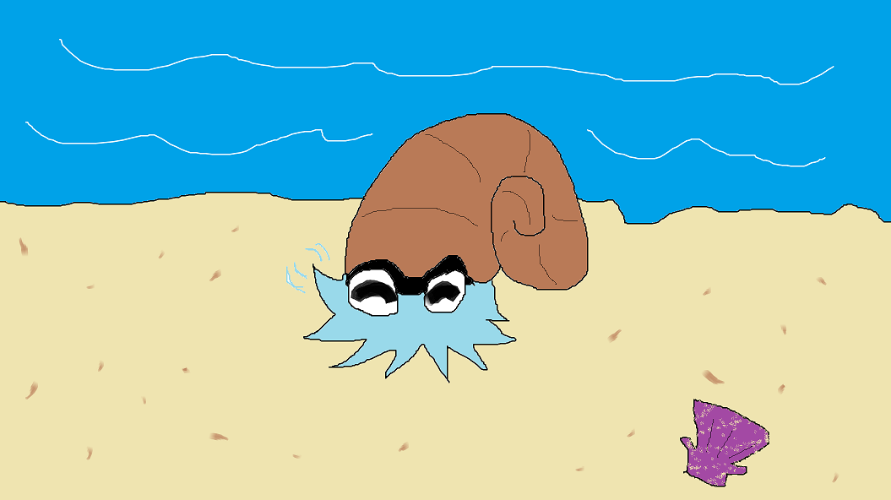

Welcome to my high-scale art portfolio/shop! This is the place to go in
order to both marvel at my high-quality artwork as well as have the
chance to bid on some of my creations! List up top are several buyers
who I can assure you have probably bought some art of mine! Please don't
verify this with them, it's kept under wraps in order to try and keep
away art thieves but trust me they've more than likely bought my work
and you would be foolish not to join in while the getting's good! Listed
below will be whichever pieces I feel are worth showing off, some
information and history on the piece, whether it's up for grabs or not,
and other helpful information for you to boast about if you're fortunate
enough to take a piece home with you!

Piece: Happy Mollusk Friend
Year: 2023
Motivation: I wanted to create the piece 'Happy Molllusk Friend'
Additional Facts:
Look at how blue he is!
He's waving hello!
The purple shell is a nice touch
That's the beach he's on
My one friend said "He's so happy!"
Listing price: Ten Trillion Dollars
For Sale?: Absolutely not
Final Thoughts: This was supposed to be a bad art piece but I
accidentally made something I really like.